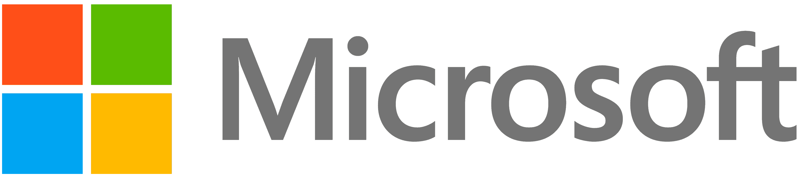
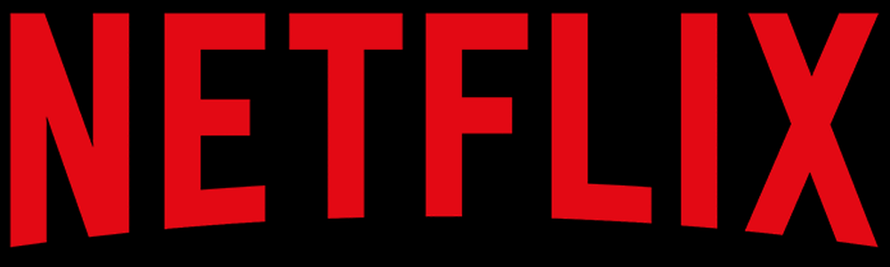

Microsoft Corporation je američka multinacionalna tehnološka tvrtka sa
sjedištem u Redmondu (Washington). Osnovne djelatnosti tvrtke
obuhvaćaju razvoj, proizvodnju, licenciranje, potporu i prodaju
računalnog softvera, potrošačke elektronike, osobnih alata i srodnih
usluga. Najpoznatije linije proizvoda uključuju liniju operacijskih
sustava Microsoft Windows, paket proizvoda Microsoft Office,
preglednike Internet Explorer i Microsoft Edge.

Microsoft Logo
Microsoft su osnovali Bill Gates i Paul Allen 4. travnja 1975. godine
za razvoj i prodaju BASIC interpretera za računala Altair 8800.
Bill Gates
Uspjeli su dominirati tržištem operacijskih sustava za osobna računala
proizvodima MS-DOS sredinom 1980-ih, te kasnije Microsoft Windows.
Početna javna ponuda dionica tvrke u 1986. i naknadni rast njihove
cijene, stvorila je tri milijardera, a procjenjuje se da je oko 12
tisuća njihovih zaposlenika postalo milijunašima. Od 1990-ih,
Microsoft se značajno diverzificirao od tržišta operacijskih sustava,
obavivši nekoliko pripajanja drugih tvrtki, najveća od kojih su Skype
Technologies u svibnju 2011. za 8,5 milijardi dolara i LinkedIn u
prosnicu 2016. za 26,2 milijardi dolara.
Od 2015. godine, Microsoft je dominantan na tržištu operacijskih
sustava koji su kompatibilni s IBM PC-em, kao i uredskih softverskih
paketa (Microsoft Office), iako su izgubili veliki dio tržišta
operacijskih sustava zbog Android operacijskog sustava. Tvrtka također
proizvodi širok raspon drugih potrošačkih programa za stolna računala
i poslužitelje (servere), te je aktivan u područjima internetske
pretrage (Bing), industrije videoigara (Xbox, Xbox 360 i Xbox One),
digitalnih servisa (MSN), mješovite stvarnosti (HoloLens), računarstva
u oblaku (Azure) i softverskog razvoja (Visual Studio). Od 2010. do
2017. Microsoft se neuspješno okušao na tržištu operacijskih sustava
za pametne telefone proizvodom Windows Phone. U lipnju 2012. Microsoft
je ušao na tržište osobnih računala po prvi puta pokretanjem serije
tableta Microsoft Surface.
Prvi Microsoftov proizvod bio je BASIC prevoditelj (eng. interpreter)
za prvo komercijalno osobno računalo Altair 8800. Godine 1977.
proizveli su i program-prevoditelj (eng. compiler) za programski jezik
Fortran. U 1978. godini, otvorili su prvi prekomorski prodajni ured u
Tokyu u Japanu, a prihod od prodaje te je godine premašio milijun
dolara. Godine 1979. prebacuju težište razvoja na softver za 16-bitne
mikroprocesore i na njima zasnovana računala. Pravi početak uspona
Microsofta u vodeću softversku tvrtku počinje 1981, kada je IBM
izbacio na tržište osobno računalo IBM PC. Računalo je koristilo
Microsoftov operacijski sustav MS-DOS 1.0 i Microsoftove programske
jezike Cobol, BASIC i Pascal. Microsoft je zadržao autorska prava na
sav navedeni softver pa je rast popularosti IBM PC računala i njegovih
kopija izravno pridonio rastu Microsofta.
Microsoft Windows je operacijski sustav za računala zasnovana na IBM
PC standardu. Postoje brojne verzije za različite namjene, od osobnih
računala do mrežnih poslužitelja (servera). Zbog planetarne
raširenosti i popularnosti kopija IBM PC računala, operacijski sustavi
Windows smatraju se glavnim Microsoftovim proizvodom.
Internet Explorer je internetski preglednik kojeg je razvila tvrtka
Microsoft, te sastavni dio Microsoft Windows operativnih sustava. Od
1999. godine, je najrašireniji internetski preglednik.
Microsoft Visual Studio je serija Microsoftovih alata za razvitak
softvera. Radi se o korisničkim sučeljima (namijenjenim ugodnijem radu
programera) povezanim s jezičnim procesorima koji podržavaju rad s
raznim programskim jezicima. Najčešći su Microsoft Visual Basic, C++ i
C#. Visual Studio podržava i dizajnerski pristup izradi programskog
koda - onaj u kojemu kod ne treba pisati, nego se programiranje može
obavljati raspoređivanjem grafičkih ikona koje simboliziraju dijelove
koda pri čemu se upisuju samo neke osnovne značajke (eng. Properites)
tih dijelova koda
Microsoft Office je softver za uredski rad. Uključuje program za
obradu teksta Word, tablični kalkulator Excel, uredsku bazu podataka
Access, program za izradu prezentacija PowerPoint te alat za izradu
jednostavnih web stranica FrontPage.
Netflix
Netflix Inc. je američki pružatelj Internet streaming usluga na
zahtjev. Tvrtka je osnovana 1997. godine sa sjedištem u Los Gatosu u
Kaliforniji. Usluge je pretplatnicima počela pružati 1999. godine.

Netflix Logo
Tvrtka je tijekom 2009. godine ponudila 100.000 naslova DVD-a i imala
10 milijuna pretplatnika. U rujnu 2014. Netflix je imao pretplatnike u
više od 40 zemalja s planovima za proširenje svoje usluge u drugim
zemljama. Do 5. siječnja 2016. je i službeno dostupna je u Sjevernoj i
Južnoj Americi, na Karibima i dijelovima Europe. Godine 2016. Netflix
je dostupan u gotovo svim zemljama, osim Kine, Sirije, Krima i
Sjeverne Koreje.
Netflix je u početku i prodavao i iznajmljivao DVD-ove poštom, ali je
prodaja prekinuta unutar godinu dana kako bi se usredotočio na posao
iznajmljivanja DVD-a. Godine 2007. Netflix je uveo streaming medija i
videa na zahtjev. Tvrtka se 2010. godine proširila na Kanadu, a zatim
na Latinsku Ameriku i Karibe. U 2011. servis je počeo prikupljati i
proizvoditi originalni sadržaj, počevši s političkom dramom House of
Cards. Do 2022. godine originalne produkcije činile su polovicu
Netflixove biblioteke u Sjedinjenim Državama, a tvrtka se odvažila i
na druge kategorije, poput izdavanja videoigara putem usluge Netflix.
Tvrtka je rangirana na 115. mjestu na ljestvici Fortune 500 i 219. na
ljestvici Forbes Global 2000. Druga je najveća kompanija za
zabavu/medije po tržišnoj kapitalizaciji od veljače 2022. Netflix je
2021. godine bio rangiran kao osmi brend kojem se najviše vjeruje na
globalnoj razini prema Jutru Savjetovati. Tijekom 2010-ih Netflix je
bio najuspješnija dionica u indeksu S&P 500 burze, s ukupnim povratom
od 3,693%. Od siječnja 2023. Netflix je imao preko 230 milijuna
pretplatnika diljem svijeta, uključujući 74,3 milijuna u Sjedinjenim
Državama i Kanadi; 76,7 milijuna u Europi, Bliskom istoku i Africi,
41,7 milijuna u Latinskoj Americi i 38 milijuna u azijsko-pacifičkoj
regiji. Usluga Netflix dostupna je diljem svijeta osim u Kini, Siriji,
Sjevernoj Koreji i Rusiji.
Netflix ima sjedište u Los Gatosu, Kalifornija, u okrugu Santa Clara,
a dva izvršna direktora, Greg Peters i Ted Sarandos, podijeljeni su
između Los Gatosa i Los Angelesa. Također ima međunarodne urede u
Aziji, Europi i Latinskoj Americi, uključujući Kanadu, Francusku,
Brazil, Nizozemsku, Indiju, Italiju, Japan, Poljsku, Južnu Koreju i
Ujedinjeno Kraljevstvo. Tvrtka ima proizvodna središta u Los Angelesu,
Albuquerqueu, Londonu, Madridu, Vancouveru i Torontu.
U siječnju 2007. tvrtka je pokrenula uslugu streaminga medija, uvodeći
video na zahtjev putem interneta. Međutim, u to je vrijeme imao samo
1.000 filmova dostupnih za streaming, u usporedbi sa 70.000 dostupnih
na DVD-u. Tvrtka je neko vrijeme razmišljala o ponudi filmova online,
ali tek su se sredinom 2000-ih brzina prijenosa podataka i troškovi
propusnosti dovoljno poboljšali da korisnicima omoguće preuzimanje
filmova s mreže. Prvotna ideja bila je "Netflix box" koji je mogao
preuzimati filmove preko noći, i biti spreman za gledanje sljedeći
dan. Do 2005. godine Netflix je preuzeo filmska prava i dizajnirao
kutiju i uslugu. Ali nakon što smo svjedočili koliko su popularni
streaming servisi kao što je YouTube unatoč nedostatku sadržaja visoke
razlučivosti, koncept korištenja hardverskog uređaja je odbačen i
zamijenjen konceptom streaminga.
U veljači 2007. Netflix je kupcu u Teksasu isporučio svoj milijarditi
DVD, kopiju Babela.
Google
Google Logo
Google LLC je američka multinacionalna tehnološka tvrtka koja se
fokusira na online oglašavanje, tehnologiju tražilica, računalstvo u
oblaku, računalni softver, kvantno računalstvo, e-trgovinu, umjetnu
inteligenciju i potrošačku elektroniku. Nazivaju ga "najmoćnijom
tvrtkom na svijetu" i jednim od najvrjednijih svjetskih brendova zbog
svoje tržišne dominacije, prikupljanja podataka i tehnoloških
prednosti u području umjetne inteligencije. Njegova matična tvrtka
Alphabet smatra se jednom od pet velikih američkih kompanija
informacijske tehnologije, uz Amazon, Apple, Metu i Microsoft.
Larry Page
Google su 4. rujna 1998. osnovali Larry Page i Sergey Brin dok su bili
doktorski studenti na Sveučilištu Stanford u Kaliforniji. Zajedno
posjeduju oko 14% dionica koje kotiraju na burzi i kontroliraju 56%
glasačke moći dioničara putem dionica s pravom super glasa. Tvrtka je
postala javna putem inicijalne javne ponude (IPO) 2004. Godine 2015.
Google je reorganiziran kao podružnica u potpunom vlasništvu Alphabeta
Inc. Google je Alphabetova najveća podružnica i holding je za
Alphabetova internetska svojstva i interese. Sundar Pichai imenovan je
izvršnim direktorom Googlea 24. listopada 2015., zamijenivši Larryja
Pagea, koji je postao izvršni direktor Alphabeta. Dana 3. prosinca
2019. Pichai je također postao izvršni direktor Alphabeta.
Tvrtka je od tada brzo rasla i nudi mnoštvo proizvoda i usluga izvan
Google pretraživanja, od kojih mnogi imaju dominantne tržišne
pozicije. Ovi proizvodi se bave širokim rasponom slučajeva upotrebe,
uključujući e-poštu (Gmail), navigaciju (Waze & Maps), računalstvo u
oblaku (Cloud), pregledavanje weba (Chrome), dijeljenje videa
(YouTube), produktivnost (Workspace), operativne sustave (Android ),
pohrana u oblaku (Drive), prijevod jezika (Prevoditelj), pohrana
fotografija (Fotografije), videopozivi (Meet), pametni dom (Nest),
pametni telefoni (Pixel), nosiva tehnologija (Pixel Watch & Fitbit),
strujanje glazbe (YouTube Glazba), video na zahtjev (YouTube TV),
umjetna inteligencija (Google Assistant), API-ji za strojno učenje
(TensorFlow), AI čipovi (TPU) i više. Ukinuti Google proizvodi
uključuju igre (Stadia), Glass, Google+, Reader, Play Music, Nexus,
Hangouts i Inbox by Gmail.
Drugi Googleovi pothvati izvan internetskih usluga i potrošačke
elektronike uključuju kvantno računalstvo (Sycamore), samovozeće
automobile (Waymo, bivši Google Self-Driving Car Project), pametne
gradove (Sidewalk Labs) i modele transformatora (Google Brain).
Google i YouTube dvije su najposjećenije web stranice u svijetu, a
slijede ih Facebook i Twitter. Google je također najveća tražilica,
aplikacija za mapiranje i navigaciju, pružatelj usluga e-pošte,
uredski paket, platforma za dijeljenje videa, pružatelj usluga pohrane
fotografija i oblaka, mobilni operativni sustav, web preglednik, ML
okvir i pružatelj usluga virtualnog pomoćnika AI-ja u svijetu prema
mjerenju tržišni udio. Na ljestvici najvrjednijih brendova Forbes je
Google na drugom mjestu, a Interbrand na četvrtom. Dobio je značajne
kritike koje uključuju probleme kao što su zabrinutost za privatnost,
izbjegavanje plaćanja poreza, cenzura, neutralnost pretraživanja,
antitrust i zlouporaba monopolskog položaja.
Google je započeo u siječnju 1996. kao istraživački projekt Larryja
Pagea i Sergeya Brina dok su obojica bili doktorski studenti na
Sveučilištu Stanford u Kaliforniji. Projekt je u početku uključivao
neslužbenog "trećeg osnivača", Scotta Hassana, izvornog vodećeg
programera koji je napisao veći dio koda za originalnu tražilicu
Google, ali je otišao prije nego što je Google službeno osnovan kao
tvrtka; Hassan je nastavio karijeru u robotici i osnovao tvrtku Willow
Garage 2006. godine.